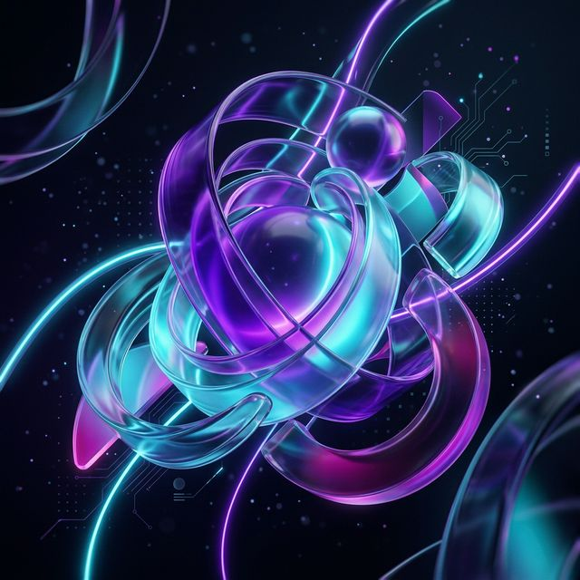

6th semester student at the Silesian University of Technology with practical experience in the full SDLC, from architecture to testing.

Bridging the gap between hardware and software.
I am an ambitious Computer Science student passionate about embedded systems and software engineering. I have successfully completed advanced projects combining hardware layers (ESP32) with mobile applications (Kotlin) and systems based on microservices.
I am seeking an internship where I can develop my skills in commercial projects, maintaining high code quality in accordance with SOLID and Clean Code principles.
Faculty of Automatic Control, Electronics and Computer Science in Gliwice
Technologies and tools I work with daily.
Advanced: C++
Intermediate: C, Python, Java, Kotlin
Beginner: C#, TypeScript, Swift
Full Software Development Life Cycle (SDLC), Design Patterns, Code Quality (Clean Code, SOLID, DRY).
Core: OOP, Algorithms & Data Structures (Trees, Lists, Graphs).
Mobile: Android Studio (Kotlin), Xcode (Swift)
Desktop/UI: Qt, PyQt, Avalonia, SFML
Systems/Web: Node.js, HTML5/CSS/JS, MongoDB, MySQL, SQLite
Game: Unity
Embedded: ESP32, PIC Microcontrollers
Assembly: Intel x86 (MASM, NASM)
Tools: Linux CLI, Git, AutoCAD, Fusion360
Showcasing my capabilities across different stacks.
ESP32 / Kotlin / UDP / Quaternion Fusion
Java / Payara / JDBC / JUnit 5 / Web
.NET (Avalonia) / Python / Node.js / MongoDB
Beyond the keyboard.